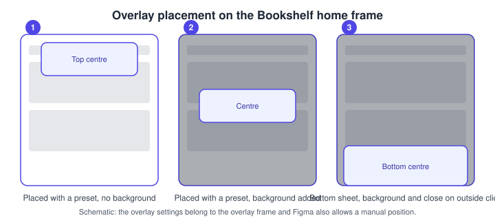
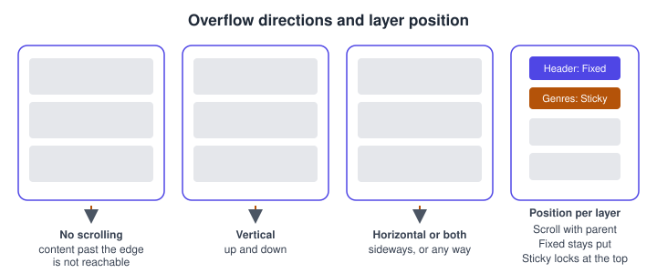
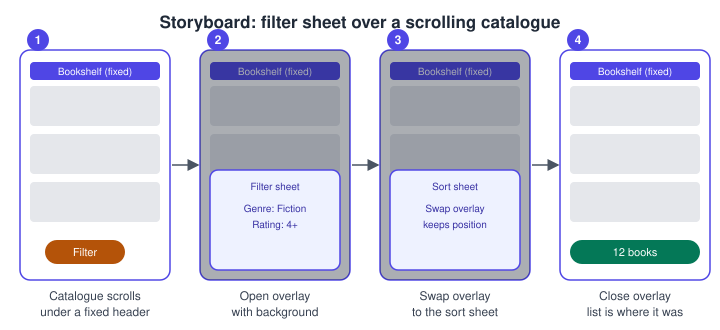

Overlays, Scrolling and Fixed Elements
|
This content was generated with the assistance of AI and should be verified against the official documentation before being relied on in production. |
This page was written on 2026-10-30 against the UI3 interface of Figma Design. Prototyping is available on all plans, and building connections needs edit access to the file, which in practice means a Full seat. The Bookshelf example used here is a catalogue screen with a fixed header, a long list of book cards and a filter sheet that opens above the list. The basics of connections and triggers are on Prototyping basics, and the animation applied when an overlay appears is covered on Transitions, easing and springs.
Overlays
An overlay is a frame that appears above the current screen or frame. Typical uses are tooltips, menus, alerts, confirmations and bottom sheets. The overlay frame is placed over the screen without replacing it, so what is underneath stays in place and can be dimmed with a background.
Overlay actions
In the Prototype tab of the right sidebar, add an interaction to a trigger layer and choose the action:
-
Open overlay: shows the destination frame above the current one.
-
Swap overlay: replaces an overlay that is already open with another one and keeps the existing overlay settings. The new overlay takes the position of the original, so it cannot change position. Swapped overlays are not recorded in the history, so a Back action returns to the previous screen and not to the previous overlay.
-
Close overlay: dismisses the open overlay. Figma’s overlay article does not describe this action in detail, so confirm its behaviour in Preview.
Overlay settings belong to the overlay frame and not to the connection, so one overlay can be reused from many triggers. Overlays can only be edited or deleted in Prototype mode.
Position, background and closing
-
Position: choose one of the seven preset positions or set a manual position.
-
Close when clicking outside: dismisses the overlay when the viewer clicks outside its bounds.
-
Add background behind overlay: puts a backdrop between the overlay and the screen below, with a colour and an opacity you set.
-
Animation: the transition, direction, easing and duration used when the overlay appears.

Whether nested overlays and scrolling inside an overlay behave as you expect is not covered by the overlay article, so test them in Preview before you rely on them.
Scroll and overflow
By default a frame shows only what fits inside it. To make a long screen scrollable, select the frame, open the Prototype tab and set Scroll behavior > Overflow:
-
No scrolling: content beyond the frame is not viewable.
-
Vertical: scrolls up and down.
-
Horizontal: scrolls left and right.
-
Both directions: scrolls in any direction.
Only frames can have overflow, top-level or nested. The content must extend past the frame bounds, otherwise Figma shows a warning. A nested frame with its own overflow, such as a horizontal row of book covers inside a vertically scrolling page, scrolls independently of its parent.
Fixed and sticky layers
In the same section, the Position dropdown sets how each layer reacts while its frame scrolls:
-
Scroll with parent: moves with the frame (the default behaviour).
-
Fixed: stays where it is while the rest scrolls. Figma moves a fixed layer above the others and labels it Fixed in the Layers panel.
-
Sticky: scrolls until its top edge reaches the top of its parent frame and then stays there. Scrolling back up releases it. It needs a frame with vertical scrolling, and a sticky layer nested in another layer stays within that direct parent.
Layers below a sticky layer scroll behind it and layers above scroll in front, so reorder the Layers panel if the stacking is wrong.

Pitfalls from the same article:
-
A fixed layer cannot sit below scrolling layers.
-
Fixed positioning is not available for layers inside an auto layout frame unless the layer uses absolute position. Auto layout is described on Auto layout.
-
Layer order in the Layers panel decides stacking. In auto layout frames the default Canvas stacking is Last on top, and it can be changed to First on top in the auto layout settings.
Scroll to
The Scroll to action moves the viewer to another layer in the same top-level frame, for example a back-to-top button or an anchor link. Scroll to cannot target a layer in a different top-level frame, and the target must be on a frame that has overflow applied. This limitation comes from community discussions and secondary material at the time of writing and was not found in an official article on 2026-10-30, so check the Interaction panel of your file and Preview before you depend on it.
Preserved scroll position
Figma remembers the scroll position of top-level frames and scrollable layers when the viewer leaves a screen and returns, and shares the position between matching layers on different frames. The rules are:
-
Nested layers match when they have identical names and the same set of parents across the top-level frames.
-
Top-level frames match when their names are identical or share a prefix followed by a slash, such as Catalogue / List and Catalogue / Filtered.
-
To return a layer to its original canvas position for one interaction, tick Reset scroll position in the State section of the Interaction panel.
-
To rename many layers at once, select them and press Command R on macOS or Ctrl R on Windows.
Interactions created before 2023-05-24 used a Preserve scroll position toggle. New interactions follow the matching rules above, and an older interaction can be migrated with the Update button in the Interaction details modal.
Procedure: the Bookshelf filter sheet
-
Build a Catalogue frame with a header and a column of book cards that is taller than the frame. In the Prototype tab set Overflow to Vertical.
-
Select the header, set Position to Fixed and check the header stays visible in Preview.
-
Build a separate Filter sheet frame sized as a bottom sheet, with Genre and Rating controls and an Apply button.
-
Select the Filter button on the Catalogue, add an interaction with the On click trigger and the Open overlay action, with the Filter sheet as destination.
-
On the overlay, choose the bottom centre position, turn on Add background behind overlay and Close when clicking outside.
-
Select Apply on the sheet and add the Close overlay action. Optionally add a Sort sheet and a Swap overlay action to move between sheets without changing position.
-
Open Preview, scroll the list, open the sheet, close it and check the list is where you left it.

Where the older guides are outdated
Guides written before the UI3 interface describe the Prototype tab in the old properties panel. Since 2025-04-30 UI3 is the only interface, and the controls above live in the right sidebar. The older Preserve scroll position toggle was replaced by name-based matching on 2023-05-24. Interactive components and state changes, which books present as a newer feature, are covered on Interactive components and microinteractions, and variable-driven behaviour on Advanced prototyping with variables. Presenting and sharing the result is on Presenting and testing prototypes.
Source: Figma release notes